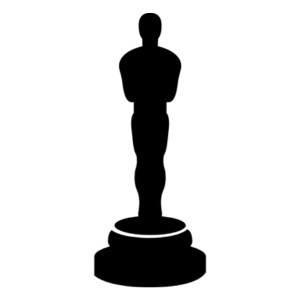
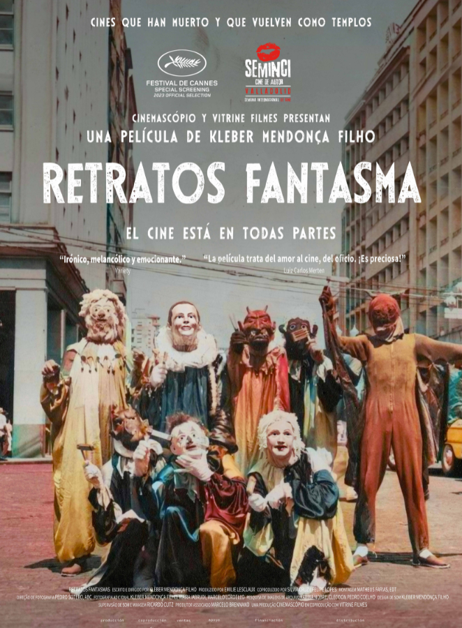

Retratos Fantasma
Kleber Mendonça Filho
Como en tantas ciudades del mundo a lo largo del siglo XX, millones de personas fueron al cine en el centro de Recife. Con el paso del tiempo, las ruinas de los grandes cines revelan algunas verdades sobre la vida en sociedad.
Lista de premios y festivales:
- Premios Oscars 2024 – Película representante de Brasil
- Festival de Cannes 2023- Proyecciones especiales
- 61º New York Film Festival - Main Slate
- 48º Toronto International Film Festival - Wavelength
- 68º SEMINCI - 2º Premio Tiempo de Historia